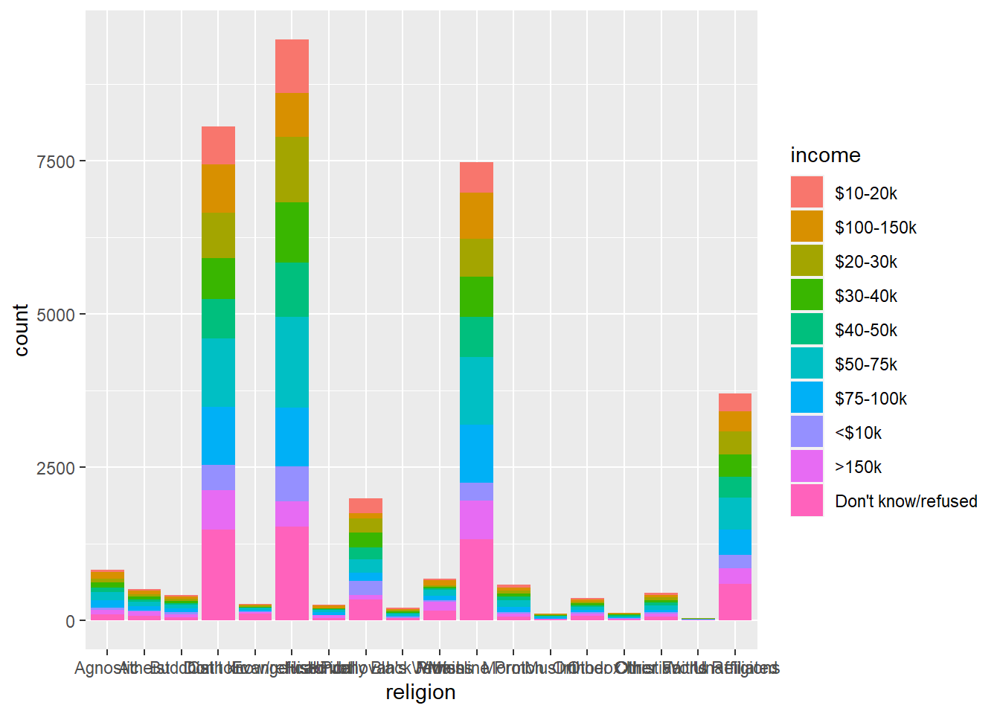
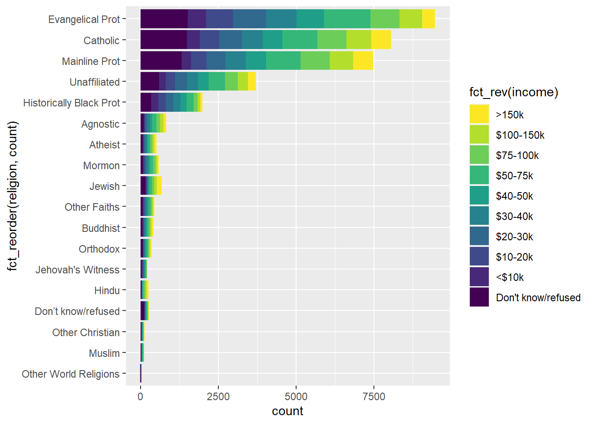
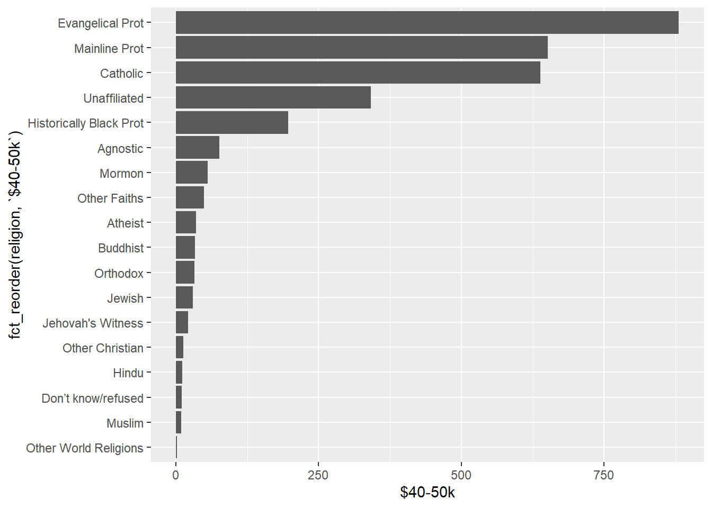
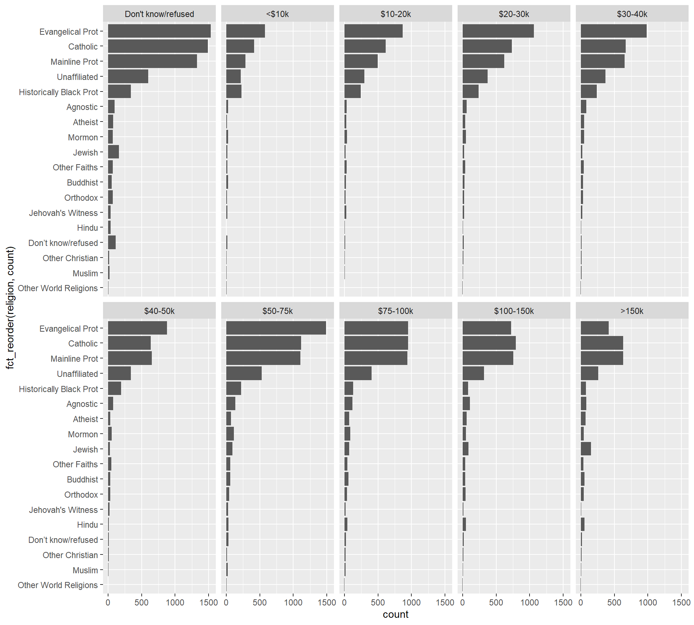
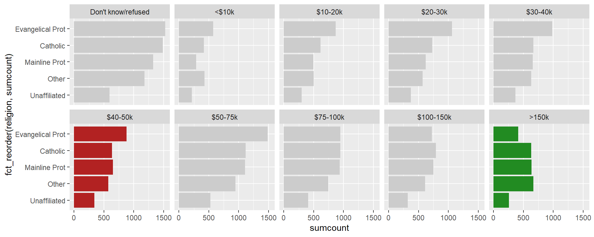

library(tidyverse)Pivot
Tidy data
Reshape data to align your data format to your analysis.
https://tidyr.tidyverse.org/
Pivot Vignette: https://tidyr.tidyverse.org/articles/pivot.html
- Make messy data into tidy data
- Every variable is a column
- Every row is an observation
- Every cell is a single value
- Pivoting (i.e. reshaping)
| tidyr | gather | spread |
|---|---|---|
| NEW | pivot_longer | pivot_wider |
| reshape(2) | melt | cast |
| spreadsheets | unpivot | pivot |
| databases | fold | unfold |
Load library packages
Data
Find practice datasets from the tidyr package…
data(relig_income)
data(fish_encounters)Longer
pivot_longer()
relig_incomerelig_income %>%
pivot_longer(-religion, names_to = "income", values_to = "count")Wider
pivot_wider()
fish_encountersfish_encounters %>%
pivot_wider(names_from = station, values_from = seen)Why pivot data?
Why pivot data? Your analysis may be easier, or may require, the shape of data to match a particular structure. For example, ggplot generally prefers long tidy data. For example, once the data are properly shaped, analysis and variations becomes easier. Below is a quick example of using ggplot to format data in a long and tidy shape to create a bar plot. Of course, the plot needs some refining and hence improvements become easier to accomplish with the tall data shape. Nonetheless, below shows an initial draft of a bar plot.
relig_income %>%
pivot_longer(-religion, names_to = "income", values_to = "count") %>%
ggplot(aes(religion, count, fill = income)) +
geom_col()
Once the data are properly shaped, variations on analysis becomes easier. Here I will, additionally, format some of the variables as categorical vectors, so that I can redraw the plot for more clarity. That is, to tell my data story more clearly.
My goal is to format the vectors as factors using the forcats package. This will allow me arrange
- the order of the bars
- the order of the stacked elements of each bar
- the order of the Legend
I will also change the color scheme of the discrete color from the fill argument, in combination with the scale_fill_iridis_d function.
inc_levels = c("Don't know/refused",
"<$10k", "$10-20k", "$20-30k", "$30-40k",
"$40-50k", "$50-75k", "$75-100k", "$100-150k",
">150k")
relig_income %>%
pivot_longer(-religion, names_to = "income", values_to = "count") %>%
mutate(income = fct_relevel(income, inc_levels)) %>%
ggplot(aes(fct_reorder(religion, count),
count, fill = fct_rev(income))) +
geom_col() +
scale_fill_viridis_d(direction = -1) +
coord_flip() 
Nonetheless, unpivoted, wide data, can be subset and visualized even though this is not ideal when attempting visualization variations on a more complex data frame. Here, unpivoted, I will make a bar chart of religious affiliation for incomes between $40k and $50k.
relig_income %>%
ggplot(aes(fct_reorder(religion, `$40-50k`), `$40-50k`)) +
geom_col() +
coord_flip()
Note: Tidy, pivot_longer, data will be easier to manipulate with ggplot2. For example, You can subset the data with a single filter function, thereby more easily enabling different income charts. Below, although there is an additional line of code, the code is easier to read and easier to modify if I want to use a different income value.
filter(income == "$40-50k")
relig_income %>%
pivot_longer(-religion, names_to = "income", values_to = "count") %>%
filter(income == "$40-50k") %>%
ggplot(aes(fct_reorder(religion, count), count)) +
geom_col() +
coord_flip() 
It also becomes a natural step to make comparisons with all the income values using ggplot2::facet_wrap()
relig_income %>%
pivot_longer(-religion, names_to = "income", values_to = "count") %>%
mutate(income = fct_relevel(income, inc_levels)) %>%
ggplot(aes(fct_reorder(religion, count),
count)) +
geom_col(show.legend = FALSE) +
coord_flip() +
facet_wrap(~ income, nrow = 2)
Another variation. Again, ggplot2 affordances are easier to leverage with tall data.
relig_income %>%
pivot_longer(-religion, names_to = "income", values_to = "count") %>%
mutate(religion = fct_lump_n(religion, 4, w = count)) %>%
mutate(income = fct_relevel(income, inc_levels)) %>%
group_by(religion, income) %>%
summarise(sumcount = sum(count)) %>%
ggplot(aes(fct_reorder(religion, sumcount),
sumcount)) +
geom_col(fill = "grey80", show.legend = FALSE) +
geom_col(data = . %>% filter(income == "$40-50k"),
fill = "firebrick") +
geom_col(data = . %>% filter(income == ">150k"),
fill = "forestgreen") +
coord_flip() +
facet_wrap(~ income, nrow = 2) 